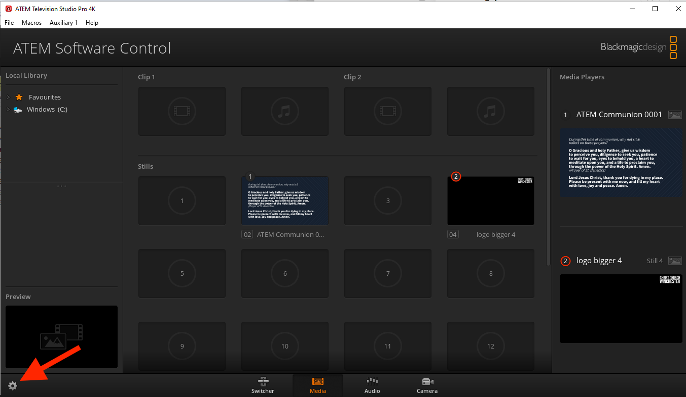

Problem Solving
In general, try to narrow down and eventually isolate the cause of the problem. If there is a problem with one or two cameras and you can’t fix it before the service starts, you may be able to make do with the remaining cameras.
Remember the all-important line from “The IT Crowd” TV series: “Have you tried turning it off and back on again?”.
If you get stuck, try asking on the “Streaming” Slack channel or see if there’s someone around in church who can help.
The following problems are organised by problem symptoms, each with possible explanations and fixes. If you find a problem not listed here, please tell others about it so it can be added.
ATEM switcher is powered off (“no lights”)
This is often caused by the power cable coming loose. Reach over the back of the switcher and plug the power cable back in on the right hand side.
The multiview monitor is black
Check the monitor power and display cables are securely plugged in at both ends.
The camera controller is powered off (“no lights”)
Check the power cable hasn’t come loose and that the switch on the back of the camera controller is in the “on” position.
The streaming PC display is black
Check the display power and display cables are securely plugged in at both ends.
No stream appears on the YouTube preview
One cause of this is that the encoder is not streaming. Check the STREAM button on the NVS-34 encoder at the top of the live streaming rack. It should be lit up continuously in red. If it is white or flashing red, there is a problem.
To fix this, power off the encoder using the power button (a rocker switch with “1” printed above “0”) on the front of the encoder, wait 10 seconds, and power back on the encoder. It takes 20 seconds or so to boot up, during which time the four right hand buttons on the encoder light up red.
If the STREAM button is white after boot has completed, you can try pressing and holding it to start it flashing and very occasionally it turns to continuous red. But, ideally, rebooting the encoder will result in the STREAM button lighting up continuous in red.
You may need to repeat this encoder reboot sequence five or more times before the STREAM button lights up continuously in red.
Once the STREAM button is lit continuously in red, refresh the YouTube studio web page and see if the preview then displays the live stream. It takes 30-60 seconds or more to preview the stream, so please be patient.
The video of a camera does not appear on the multiview display
This may be because the camera has not been powered on. Use the camera controller to power all the cameras on.
To see if the camera is powered on, double click the relevant camera icon on the streaming PC desktop. If you see a picture from the camera, it is powered on and the problem may be that the SDI (video) cable is not properly connected to the camera (or to the back of the rack or to the back of the ATEM switcher). Disconnect and reconnect each plug in turn to ensure it is properly connected.
The camera controller fails to operate the cameras
The camera controller may still be in menu mode, in which case the “menu” button will be lit. Press the menu button to exit menu mode.
Alternatively, the controller may be operating a group of cameras other than group 1. You need to select group 1, thus:
- Press “menu” and then “8”
- Select “group” by turning then pressing the F1 dial
- Select “group select” by turning then pressing the F2 dial
- (I presume) Press “1” to select group 1.
Alternatively, it has been known for the camera controller to reset itself to factory defaults.
Try power-cycling the camera controller to see if this fixes the problem. If not, you may need to go to the setup menu and re-enter the IP address of each of the cameras: 192.168.0.181-184 (for cameras 1-4). The cameras also need to be set to “network” connection rather than “serial”. When entering an IP address, press F2 to select each “dotted decimal” number of the IP address in turn and turn F2 to change the current number. Refer to “Changing the camera numbers” on page 34 of the basic manual for the camera controller (available under Hardware) for how to set camera IP addresses. The IP address of the camera controller also needs to be set to
the correct value: 192.168.0.188. If you prefer, you can use the RP50Tool shortcut on the streaming PC desktop to make these changes (but beware that the tool uses the camera controller’s IP address to communicate with it, so this will need to be changed as necessary).
If the camera controller cannot be made to work, try using the camera controller software (“RP50Tool”) on the streaming PC.
If all else fails, you can gain some basic control of the cameras over TCP/IP using the shortcuts on the streaming PC desktop. See Software.
The encoder stream button flashes red
This may be due to the encoder looking at the wrong input. Open up the encoder software on the streaming PC (there’s a shortcut on the desktop, with a note of the admin password on the shortcut), select the “source” tab, and ensure that the SDI source is selected (rather than HDMI).
When the encoder is streaming normally, the stream button should be lit red continuously.
The “go live” icon is greyed out on YouTube
This may be due to the stream in question having already been used, even if only briefly. You need to create a fresh stream. See Scheduling services for instructions.
The live stream does not appear in the preview on YouTube
This may be because the video encoder in the rack is not yet in streaming mode (the “streaming” button needs to be lit in red). Press the streaming button on the video encoder to start streaming. Note: this isn’t usually necessary, so be patient while YouTube connects to the stream as this can take up to 20-30 seconds.
YouTube shows “no data” or “poor connection”
This may be an intermittent or permanent problem and means that the stream will not record properly.
Unless this clears up before the start of the service, the live stream will not be possible (and we don’t attempt to record the stream to a SD card like we sometimes used to).
(If there is a temporary internet outage and the YouTube stream cannot be connected to after the internet is back up, it may be possible to create a new stream and use that.)
The internet is not accessible from the live streaming PC
The antivirus/firewall software on the streaming PC may be out of date. Temporarily disable the antivirus/firewall from the network settings to work around this.
Another cause of losing internet (across the whole site!) is if the camera controller has lost its settings and set its IP address to the default of 192.168.0.10 which conflicts with the church’s main internet gateway. See The camera controller fails to operate the cameras for how to set the camera controller settings back to what they should be.
Poor sound quality on the live stream
Sometimes the host or a member of the online congregation will point out that the sound is poor or that there is a specific problem with the sound. Check the sound level on the “live” panel of the multiview monitor. If it seems too low, check with the sound desk operator that the sound desk is correctly set up. If it’s still too low, you can boost the volume by using the ATEM switcher software on the live streaming PC. In the audio tab there is a master volume slider and a xlr slider which can be increased.
Song words not outlined in black
If the song words are no longer outlined in black, reload the ATEM settings (but not during a live stream in case this interrupts it) and save the startup state. A good set of ATEM settings is in the Documents folder of the live streaming PC. Reload them using the ATEM software and use the ATEM software to save the startup state.
Christ Church Winchester logo not visible
If the logo does not show, reload the ATEM settings (but not during a live stream in case this interrupts it) and save the startup state. A good set of ATEM settings is in the Documents folder of the live streaming PC. Reload them using the ATEM software and use the ATEM software to save the startup state.
Problems with the song words or AV input (“camera 6”)
The AV and live streaming desks may have been powered up in the wrong order. This should be impossible following the ABCDE refurbishment: the equipment is powered up in the correct sequence automatically. This ensures that the graphics card in the AV PC detects the correct inputs.
There is also a Microsoft Word document on the AV PC which describes the display arrangement (“3, 4, 1|2”, where displays 1 and 2 are mirrored) and EasyWorship settings.
YouTube connection problems
If the live stream fails or YouTube reports buffering problems for more than a second or two, there may be an issue with the internet connection. There’s not much you can do about this, but please report it so we can look into it.
Framerate problems
Sometimes the YouTube preview shows people moving around much faster than normal. This is due to an incorrect framerate being used.
(There is another benign framerate issue when YouTube complains that the framerates of the primary and secondary streams are not the same - just ignore that.)
One workaround is to power down the whole tech desk and then power it up again. This takes several minutes and is usually too disruptive to the sound and AV teams. It may be possible to work around this by power-cycling just the live streaming Blackmagic ATEM and/or the encoder (the unit at the top of the live streaming rack).
Another, more reliable, workaround is to use the ATEM software on the live streaming PC to change the video standard and then change it back again, as follows:
-
Open up the ATEM software (see PC Software).
-
Click the gear icon to access the settings: 
-
Use the drop down menu to set the video standard temporarily to 1080p25:
 and click Set. The setting should now look like this:
and click Set. The setting should now look like this:
 and the multiview monitor will be black.
and the multiview monitor will be black. -
Now use the same drop down menu to set the video standard back to 1080p50 and click Set.
-
Soon the framerate should be corrected and the YouTube preview should show people moving at the normal speed.
{kind=link}